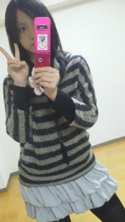

みなさーん
今日で2011年が終わっちゃいますよー(ω)!!!!
ああ早かった。2011年あっという間過ぎた。
よしみなさん。今日はひめたんと一緒に2011年を振り返ってみましょー!おー!
2011年はひめたんの人生の転機だったですよ。うん
だって第２の人生のスタートって言っても過言ぢゃないはず(。・x・。)
「2010」年ってロゴがあまりにしっくり来すぎて
「2011」年のバランスの悪さに感動したことに始まり
出会い。
春には無邪気でおばかで大好きな３年４組のみんなと
夏には同じ夢や目標を持って集まった35人の女の子たちと
秋にはこうしてブログを読んでくださるみなさんとの
素敵な出会いを果たしました(^^)
ろってぃー(川村真洋chan)とかずみん(高山一実chan)に関しては
出会いってか再開ー。
2011年8月21日は乃木坂の誕生日ですよー♪
絶対絶対忘れないでくださいね★カレンダーにちぇっくちぇっくー
別れ。
地元のスクール、ひめたん中1の時に受験のため退学しようと思ったんです。
芸能界より他に夢があったから。
でも、あの時先生が必死に説得してくれたから今があるんです。
スクールを「卒業」って形で送り出してもらえたこと。
みんなが笑顔で送り出してくれたこと。
感謝しています。
でも、実際、まだ華やかな活躍ぶりをみんなに見せることはできていません('・ω・`)
うん。ひめたん頑張ります。
来年こそは胸を張ってスクールに顔出せるように頑張ります。
そして偉大なるひめたんの人生の大先輩。
最期の最期まで姉妹の活躍を楽しみにしてくださったってききました。
本当にありがとうございました。
最後に。
3.11。
日本人にとって、世界中の人たちにとって、
忘れてはならない悲しい出来事がありました。
あの日の東北のテレビの映像は、原爆資料館でみた
67年前に焼け野原になった広島の町と似ていました。
広島にいる自分には何もできなかったけれど、せめてもの復興を祈る気持ちは
ずっと、ずっと忘れることなくいつまでも持ち続けます。
これからもみんなで手をつないで、一緒に頑張りましょう(^^)
2011年振り返り終わりー。
2012年は乃木坂デビューがあり、ひめたんが高校生になり（。。。なれたらね♪）
ひめきゅんのみなさんとお会いする機会が増える予感がするー！
うん。幸せぢゃねv(*'-^*)ｂぶいっ♪
来年もよろしくお願いします!!!!!!!!
ひめたん
レコ大わずー(・∀・)!
AKB４８さん!!!おめでとうございますっ
乃木坂はライバル、ライバルって呼んでいただいてますが
ライバルの存在の大きさを改めて感じましたー。。。
さて、ひめたん今日はレッスン。
そして、昨日はいこまっち(生駒里奈chan)のお誕生会(・∀・)!
生駒ふぁんのみなさんの分までしっかりお祝いしてきたのでご安心を。
ひめたんいっつもみんなのお誕生会のとき広島にいて参加できんけ
今日はよかったよかった!うれしかった！
16歳だってー

いいねお姉さんぢゃね。
うん。はぴば!
新しい衣装着たー♪♪
残念ながらまだみなさんにお見せできません('`)
もちょい、もーちょいだけ待っとってねー!
2012年のお楽しみってことで。
てなわけでいっぱいいっぱいコメントーお!
 社会が好きということなので…ひめたんは歴史で好きな時代とかありますか(・_・?)
社会が好きということなので…ひめたんは歴史で好きな時代とかありますか(・_・?)
ひめたん、戦はあんま好きくないです('・・`)
国風文化とかある平安時代が平和で好きすき(∀)/
暗記物は得意ぢゃけど、時代劇は怖くて見れないー
ひめたんのカラオケ18番は？
♪へび～ろ～て～しょ～～～ん^^
お正月広島で過ごすん？？乃木坂のメンバーと遊ぶん？
それが、今年は東京で年越しってことになりました(ω)
年始から入っとるレッスンはお休みしたくないなーと思って。
メンバーと遊ぶ...はいノープランです。わら
5日のイベントハズレちゃったんだけど。次はいつひめたんに会えるんだ。
会えなすぎて病気になっちゃうんんだけど。
どうしたらいいかな？対処方法を教えてよ～。
ほえーいつになるんぢゃろ('`)
ひめたんに会いたい病はひめたんに会わないと治らんよー。
それぢゃお薬として、毎日ブログ遊びに来てくださーい!!
そこでお話ししましょうよ★
病状悪化するかな('・ω・`)
ひめたんはチャレンジしてみたい髪型とかあるのかな？
あっアリスになってみたいー!!!
ひめたん、広島弁無理して使ってる？普通でいいのに(ToT)ちょっと不自然なような…。
えっ？
全っ然無理してないですよー？？
でも、文字にしちゃうとちょっと読みにくいかなーと最近思ってます。
しっかし、よくメンバーの家に泊まりに行くなー！さすがは甘えん坊ひめたん。
何？ホテルじゃつまらないからつい泊まりに行っちゃうの？
いやーさすがに毎日遊びに行くのは申し訳ないだろうなーと思いつつ(^^)
みんなが誘ってくれるし、楽しいぢゃあないですか。
せいたんコーデっていうのはせいたんの服？
せいたんが選んだコーデっていうのは？？
せいたんの服!
でさらに、せいたんがコーディネートした組み合わせってことです(∀)
ひめにょん…野球好き？
ルールわかんない('・・`)
でも野球少年はかっこいいと思います♪♪
ひめにょんいいよね（＾o＾）/
ニックネーム変えちゃえば？
にょーん(`・ω・')
ひめにょん好きぢゃけど、ひめたんも好きなんよねー...
うん。その日の気分で決めよ。そうしよ!
ひめたん、何人のメンバーの家に泊まりましたか。 泊まったメンバーの家に、何かマーキングしていますか？
４？４人で合ってますか？
うん。2012年の目標は「メンバー全員のお家を制覇する」!!!
...やっぱり、2020年くらいまでかかりそう(>_<)宣言するのはやめときます。
マーキング。わんちゃんみたいですね

ひめたんはちょっとあごを引いて前を見るクセがあるのかな？
意識したことはないですー...。
だからクセなんかぁ(^^)わら
こないだやった『ご当地アイドルNo.1決定戦』を優勝した『まなみのりさ』って先輩？
喋ったり一緒にステージに上がった事ってある？
先輩ですー!
クリスマスやらバレンタインやら、一緒にステージで歌わせていただきました(^^)
ユニット組んでいただいたこともありましたよ♪
まなみのりささんは常に意識が高くて、本当にいろんなこと教わりました。
今でも尊敬してます。
ひめたんはお年玉もらったら何に使おうかもう決めてるかな？
or今までお年玉で買ったものはなーにー？(^O^)
今年は決まってないですー。
今までは福袋買ったり、ちっちゃい時はおもちゃ買ったり...
８割は貯金(o>ω<o)
じゃあ俺はひめたんにキュンキュンだからひめきゅんって呼ぼうかな？どう？(笑)
きゃは(*/ω＼*)採用しちゃおっかなー？
ぢゃあ、「ひめたんにキュンキュンしてる人」＝ひめきゅん!
ひめたんふぁんのみなさんのことをひめきゅんって呼んぢゃおっかなー。
そう。あなたのことです。
あ!
ぱっつん時代のひめたん発見したー(//ω//)
ひめたん
にょーん。ひめにょんです(`・ω・')
やばい。ひめにょんてワードにツボってしまった。わらわら
いこまっちー(生駒里奈chan）! おたおめー!
「ひめたんはおいちゃんの癒しよぉ(・∀・)ノ」て言ってくれるいこまっち
ひめたんよりお姉さんに見えないいこまっち
いつもふわふわしとるようで実はめっちゃ考えてるいこまっち
好きやーあああ
はい。昨日はせいたんに家お泊まりー!!!
せいたん(畠中清羅chan)と語らい、爆睡し、1日楽しんだわず。
ドアあけた瞬間バニラの香りしたー∩^ω^∩
おんなのこらしさ溢れるお部屋でした。さすがせいたん女子力高いねー
ブログ女王たま、日記もばっちり更新しとるしねー♪
もう鏡です。ひめたんもせいたんみたいになりたーい!!!
あ。せいたんと夜お話しとったんぢゃけどね
せいたんが音楽聴きながら一生懸命にお話ししてくれよって
あれー？ひめたん相づち打たんくなったなーって思ったら
ひめたん寝とったらしい...。
('・ω・`)
あーごめん。ほんっとごめんね★
コメ返一生懸命答えたけん、最後まで読んでな？（大分弁風）
はいーひめたん大分弁もマスターしそうやけん♪♪
5日の当落がもうすぐ出るんだよね。果たしてひめたんに挨拶に行けるのか？
応募した方全員来てほしーい(o>ω<o)!
当たったよーって方は報告待ってます♪
ところで、『ドリミネーション』って、ドリーム+イルミネーションの事なの？？？
Dream + Illuminations = Dreamination ？？？かな？？？
靴の周りは水晶のモチーフなのかな？ららちゃんの馬車、一般の人は乗れるのかな？
◎ドリームあんどイルミネーション。確かにそんな掛詞が隠れてるー!納得。
◎ひめたんもそうだと思います(^^)くりすたる!
◎りあるな話、ホームページで予約するとララちゃんの馬車に乗れるんとー。
ひめたんも来年はララちゃんに乗りたーい(^^)
ファミレスなら何処が好き？
おともだちと行くのはサイゼリア
ふぁみりーと行くのはガスト
メンバーと行くのはジョナサン
囲みに東日本のジョナサン＝西日本のジョイフルなんだってー♪♪
山口県も近いしふぐとかも食べるのかな？
それがおとなりの県の名産品って普段あんまり食べる機会ないですよっ
ふぐ食べたことないしー('`)
ひめたんはプレッシャーには弱いのかな?(笑)
プレッシャー...うん弱い。弱いです。
不安やら緊張やらはひめたんのお腹を刺激します('・ω・`)
いや始まってしまえば楽なんですけどね。慣れるまでが長くてー...。
ひめたん、運動苦手なんだ？
にゃは(ω)バレちゃった♪♪
走る、飛ぶ、投げる、泳ぐ、何にもできません。てへぺろ。
ただしリズム感はあるみたいで、大縄跳びなんかは引っ掛かからんよ♪
ひめたんは学校でどんなキャラですか？？部活の後輩に怒ったりしますか？僕は学校で後輩に注意できなくて困っています＞＜
学校でもわりとこんな感じだと思いますよー。
ひとりだけおかしい子みたいになっとるんかなーって心配になりますか？←
それが、ひめたんの周りはみーんなおんなじノリだから全然浮いてないです♪
さすが中坊ーわら
後輩には結構怒る人(∀)
だって放送部元部長さんですよひめたん。
でも注意するのって難しいですよね。
信頼関係が出来上がってないと年上に耳を貸さないと思うし...。
あー、もちろん怒るのも大事ぢゃけど、
悪いとこ直ったらちゃんと認めることも大事だと思います(^^)
今日はせいたんのコーデω))

ひめたん
この前ねー。ひめたんねー。
みさみさ(衛藤美彩chan)とせいたん(畠中清羅chan)とひなぴょん(川後陽菜chan)と
カラオケ行ったです(o>ω<o)!!!
うん上手かった。楽しかった。あああ。
みさみさの「赤いスイートピー」しびれました
ひなぴょんの「晴レ晴レユカイ」かわいかった
せいたんもこの日はtalk封印して歌ってました
え？ひめたん？
しっとりバラードも、のりのりアップテンポも、全部全部歌いますよん(ω)♪
それからねー。
ひなぴょん(川後陽菜chan)家にお泊まりして
一式コーディネートしてもらった(∀)きらーん
ひなぴょんいわく、ひめたんをイメージしながら考えてくれたんだとか。
うん。ひめたんぴんく好きよーお(^^)
...光の加減がわかんなくて、白にしか見えないですよねー。
ふりふりのトップス。これぴんくですよ♪
おまけに髪まで巻いてくれちゃってほんとにー!
ありがとーう!!!
あ。ちなみにひめたんの方がお姉さんだからね...。
B推しは楽しい曲だよね！
ひめたんだったら、どんなキャッチになるのかなぁ～？
あなたは今日からひめたん推し「ひめたん、ひめたん、…」
さぁ、…に入る言葉は？
ごめんなさい。ほんっとごめんなさい('・ω・`)
一週間考えたけど浮かばない...。
ひめたんを客観的に見たらどんな感じなのか、ひめたん自身わからなくて('`)
何かいい案ある方教えて下さーい!!!
日芽香ちゃんは今年のクリスマス。どのように過ごしたんですか？
初めて地元を離れて東京で過ごしました。
メンバーのみんなにメリクリー!って言えて幸せー

ぽ
ひめたんはいつまでサンタがいると信じてましたか？？？
(*/ω＼*)
『乃木坂って どこ？』の司会進行役のバナナマンのお二人はひめたんから見て
どんな印象の方かな？
ずーっとテレビで拝見してただけに最初は緊張...
したけど、同時に親近感わくわくo(^-^)o♪
後日おともだちみんなに自慢させてもらいました。わら
やっぱりオーラが違う!ひめたんももっとキラキラオーラ放たなきゃ★きらーん
握手の時思ったけどひめたんはわざと上目使いで話してるの？
いやいやそんなことないはずー何でぢゃろ(ω)
ひめたん初めましての方のおかお見るとき、恥ずかしくてうつむいちゃうって
クセがあるんですよね多分ー。
だからかな？気をつけます(`・・)ゝ
もっとしっかり目あわせよっかなー...(//ω//)きゃは
ひめたんはお正月は何するのかな！？
ひめたんが受験に合格するように自分もお参りしますね。
いやーんありがとうございます♪♪
ひめたんもお参りしたいけど、でも親戚のみんなにあいさつもしたいしー、
今さらぢゃけど年賀状書いとらんしー←え
ひめたんの部屋着可愛いね水玉すきなのかな？
確かに水玉好きかも∩^ω^∩
基本かわいければ何でもおっけーって人かな？
このルームウェアは一目惚れしましたよ♪♪
色とかデザインとかお気に入り^^うん。
上手く感謝の気持ちを伝える方法とかありますかね？
ひめたんも感謝の気持ちを表に出すのあんま得意な人じゃないですよ('`)
考えとることとかヒミツ事とかはわかりやすいってよく言われるのにー!
素直になるの恥ずかしいんですよね。ふふふ
たまに、たまーに、素直になったらいいのでは？それでも十分伝わりますよー。
握力強いなら今度勝負しよ～。オレとか握力85しかないからな（照れ←あ
は、はちじゅうごー!?
♪キミってーもしかしてもしかーして～
ひめたんの3.5倍はありますね？
わおw(°O°)w!!!
ひめたん
ひめたん最近ずっと日記にも書いてるドリミネーションを
今日はみなさんに紹介したいなーて思います(^^)ノ
ドリミネーションてのは広島の平和大通り100メートルに
たーくさんのイルミネーションの作品が並んでてきれいです(。・ω・。)ノ
ほんまにほんまにきれいです。
全部きれいじゃけど今日はひめたんお気に入り
①シンデレラのガラスのくつ
ひめたんちいさい時シンデレラの絵本よく読んだなあ。
メルヘンチックーさすがドリミネーション!
②ざ★広島ー♪
もみじ

といえば広島ですよねー？
ちょっとだけほんとに紅葉を見にきた
不思議な体験ができるはずです。できる!
そしてこのおうまさんララちゃんってお名前なので覚えてね
トナカイさんではないからね。お間違えなく(^^)!
今季ララちゃんが出動するのはあと１回らしい(・o・ノ)ノ
ひめたんは得意な教科は何？苦手な教科も知りたいな！(^^♪
得意なんは国語・社会
苦手なんは数学・理科・保体
要するにひめたんは文系人間で
計算と運動が苦手みたいです('・ω・`)
ハンドクリームとか使ってる？使ってるとしたら何使ってるのかな？
普段使っとるのは、THE BODY SHOPのぴんくのローズ？だったっけな？
握手会があるときは特別のー(^^)
でもヒミツー
あ、サイリウムは作るべきかな？
是非お願いしますー♪
とか言ってみる(ω)
いやー時間がかかるなら申し訳ないので大丈夫です★
でも。。。
ひめたん化粧品何使ってますか？
好きなコスメブランドとかあれば教えて下さい(>_<)☆
それがひめたんメイク初心者なんですよー。
どんなのがいいかよくわからないまま、手探中('・ω・`)
でも、可愛くって集めてるのはジルスチュアート
23日たのしかったなー。改めて(笑)
茶色いコート着てた女だけどまだ覚えてるかな？
もちろんもちろん(ω)
23日はひめたんも楽しかったですー♪
もっといっぱいお話ししたかったーいぇす。
また時間があった時には会いに来てください★待ってまーす!
blogの更新は、ひめたんからのプレゼントだと思ってますよ～
そう考えると毎日がクリスマスですね(笑)
いいと思う＼(∀)／
ひめたんもブログでみなさんとお話ししてるから
毎日がイベントみたいですよほんとー♪♪
次の握手会で方言トークしよー
任せてくださいっ(∀)きらーん
広島弁もぢゃけど、最近は関西弁もいけますよー!
ひめたんが彼女たちの憧れの先輩になると良いなあ。
あっ！もう憧れの先輩になってるかな？(^-^)
いやっひめたんはまだまだですよー。
でも懐かしいな(*/ω＼*)
そいえばこの前発表会のＤＶＤ来て、みましたみましたー!
憧れの先輩。なるぞー!おー!!!
ひめたん
{kind=link}
{kind=link}
{kind=link}
{kind=link}
{kind=link}
{kind=link}
{kind=link}
{kind=link}
{kind=link}
{kind=link}